Chapter 2 Counts modeling
2.1 A first exploration of counts
In this section, I will discuss the statistical models that are often used to analyze RNA-seq data, in particular gene-level count matrices. I will then use the DESeq2 package to calculate scaling factors, estimate biological dispersion within groups of samples, and perform differential testing per gene (14).
Some other popular Bioconductor packages for RNA-seq analysis include the edgeR package (15, 16) and the limma-voom method in the limma package (17). The approach taken by DESeq2 for estimation of dispersion is similar to the method proposed by (18) in the DSS Bioconductor package.
I will begin by investigating the estimated counts that were imported from the Salmon software, and comparing these counts across and within samples. I will note the varying precision that the counts offer for log ratio comparisons between samples. Finally, I will perform per-gene testing for differential expression using the DESeq2 package, and multiple test correction, including the IHW method (19). Note that the first section of this chapter includes code and plots that are not typically performed during RNA-seq analysis, but mostly for introducing the reader to some basic properties of RNA-seq count matrices.
First, it’s useful to explore the varying number of fragments (pairs of reads) that have been assigned to the genes for each sample. For a typical mammalian RNA-seq experiment, we might expect tens of millions of fragments per sample, which are distributed across tens of thousands of genes, although there is inevitably a range of sequencing depth for each sample:
## [1] "counts" "abundance" "length"cs <- colSums(assay(gse, "counts"))
hist(cs/1e6, col="grey", border="white",
main="", xlab="column sums (per million)")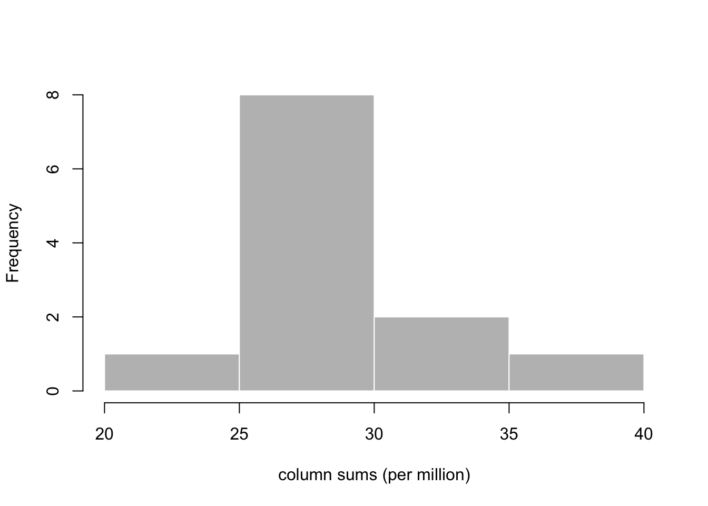
Let us first consider just two samples, one from the OCT4 untreated
group and one from the OCT4 treated group. I will make a plot
examining the proportion of the total count for each gene. I will
first subset to only those genes where both samples have a count of 5
or more, to cut down on the number of points to plot. Here I use the
total count, colSums(cts) to divide the counts for each sample,
while later we will discuss a robust estimator for sequencing depth
variation across samples.
Before I create the proportions, it’s important to remember that,
because genes with longer transcripts will produce more cDNA
fragments, the proportion estimated here (without taking into account
the length of the feature) does not estimate the proportion of
molecules. The abundance assay of the gse object contains
estimates of the proportions of the molecules, in transcripts per
million (TPM). For more on how these estimates are computed, consult
the Salmon paper (6).
cts <- assay(gse, "counts")[,c(1,4)]
idx <- rowSums(cts >= 5) == 2
cts <- cts[idx,]
p <- sweep(cts, 2, colSums(cts), "/")We can examine the ratio of the proportions for each gene, over the
geometric mean, using the maplot function from the rafalib
package. We will plot the ratio and the geometric mean of proportions
both on the log scale. maplot is a basic function for making an
“MA-plot” which has been used in transcriptomics since at least the
early 2000s when it was used for microarray datasets (20, 21). Later I will show a specialized MA-plot function for
RNA-seq data in DESeq2.
library(rafalib)
maplot(log10(p[,1]), log10(p[,2]), n=nrow(p),
cex=.3, col=rgb(0,0,0,.2),
xlab="log10 proportion (geometric mean)",
ylab="log10 fold change")
abline(h=0, col=rgb(0,0,1,.5))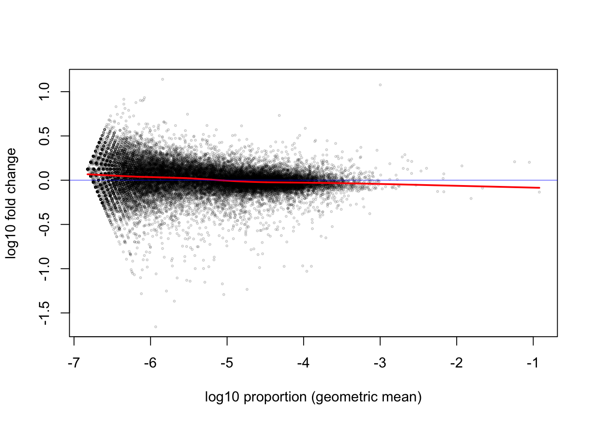
The red line is a smooth curve through the log ratios (here \(\log_{10}\), although we will later switch to \(\log_2\) for more interpretable ratios). Note that the line is relatively flat across many orders of magnitude of the proportion. So whether the gene has 1 millionth of the total count (-6) or up to one thousandth of the total count (-3), the ratio between the two samples tends to fluctuate around 0, with most of the points somewhere between -0.1 and 0.1. The points further off the horizontal line may indicate differentially expressed genes, but we will better identify these using all of the replicates.
While just considering the two samples, I can also examine the histogram of the x-axis above, the mean of the \(\log_{10}\) proportions (or equivalently the \(\log_{10}\) of the geometric mean of proportions). We see that most genes that we are considering fall in the range from 1/10,000,000 (-7) to 1/10,000 (-4) of the total count. That these ratios are very low is relevant for the choice of statistical distribution for the counts.
mean.log.p <- rowMeans(log10(p))
hist(mean.log.p, col="grey", border="white",
main="", xlab="log10 proportion (geometric mean)")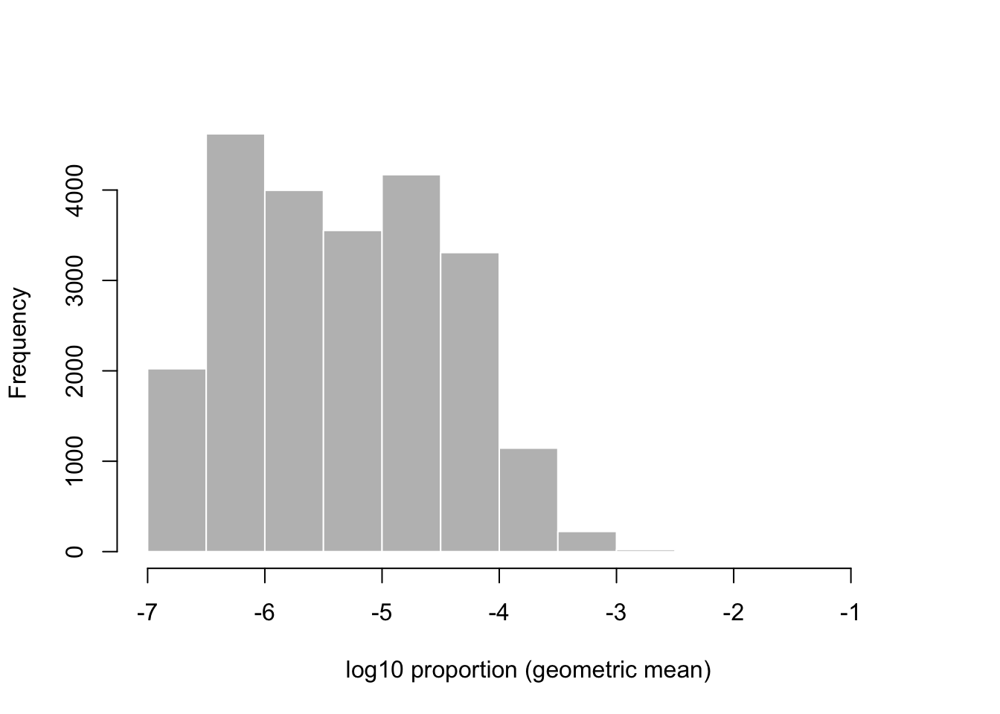
library(rafalib)
maplot(log10(p[,1]), log10(p[,2]), n=nrow(p),
xlim=c(-6.5, -3.5), ylim=c(-2,2),
cex=.3, col=rgb(0,0,0,.2),
xlab="log10 proportion (geometric mean)",
ylab="log10 fold change")
abline(h=0, col=rgb(0,0,1,.5))
I will zoom out on the y-axis and zoom in on the x-axis on the MA-plot to emphasize that, for the range containing most of the genes, the middle of the distribution of the ratio of proportions across the treatment is centered on 0.
The base of \(10\) is not a great choice for the logarithm, because it’s not common to have a 10 fold change, and then it becomes hard to interpret the meaningful changes in the range from 0 to 1. Much better is to use \(\log_2\), as we can easily interpret 1 as doubling, 2 as quadrupling, etc. Now I calculate the \(\log_2\) ratio of proportions and plot the histogram of these log ratios, for genes where the log10 mean proportion is between -6 and -4:
lfc <- log2(p[,2]) - log2(p[,1])
hist(lfc[between(mean.log.p, -6, -4)],
breaks=seq(-10,10,by=.1),
xlim=c(-5,5),
col="grey50", border="white",
main="", xlab="log2 fold change of proportion")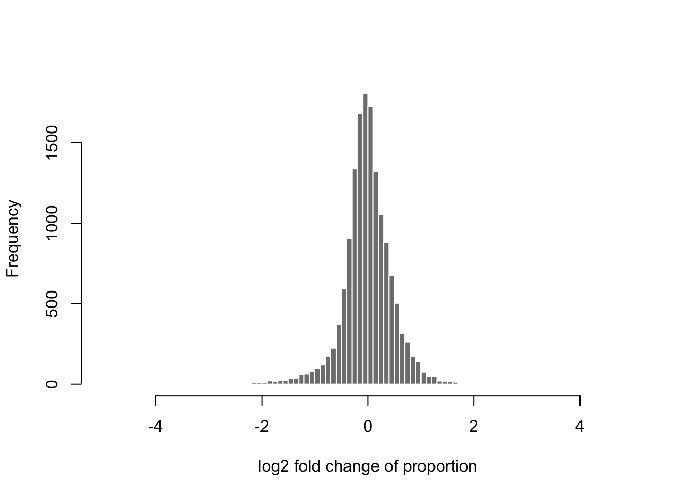
Again we see that it’s rare for there to be an extreme change (more than doubling) comparing these two samples from different treatment groups. Most of the genes fall around 0. Exactly 0 implies no change in the proportion as calculated using the total count.
Before we begin modeling the counts from the RNA-seq experiment, I
produce one more plot to give a sense of expected sampling variation
with counts of a similar distribution to the ones we
observed. Supposing that the proportions p was fixed for the first
sample, and we draw 30,000,000 fragments according to these gene-wise
proportions. We would then obtain a multinomial distribution for the
counts per gene. When the number of observations is large, and the
proportions are small, the count for any given gene is well
approximated by a Poisson distribution. So I will create two simulated
technical replicate samples, by creating two draws from a Poisson
distribution along the genes. I then repeat the same code as above,
to examine the MA-plot for the simulated counts.
## [1] 29994168 30001460idx <- rowSums(sim.cts >= 5) == 2
sim.cts <- sim.cts[idx,]
sim.p <- sweep(sim.cts, 2, colSums(sim.cts), "/")
maplot(log10(sim.p[,1]), log10(sim.p[,2]), n=nrow(p),
cex=.3, col=rgb(0,0,0,.2),
xlab="log10 proportion (geometric mean)",
ylab="log10 fold change")
abline(h=0, col=rgb(0,0,1,.5))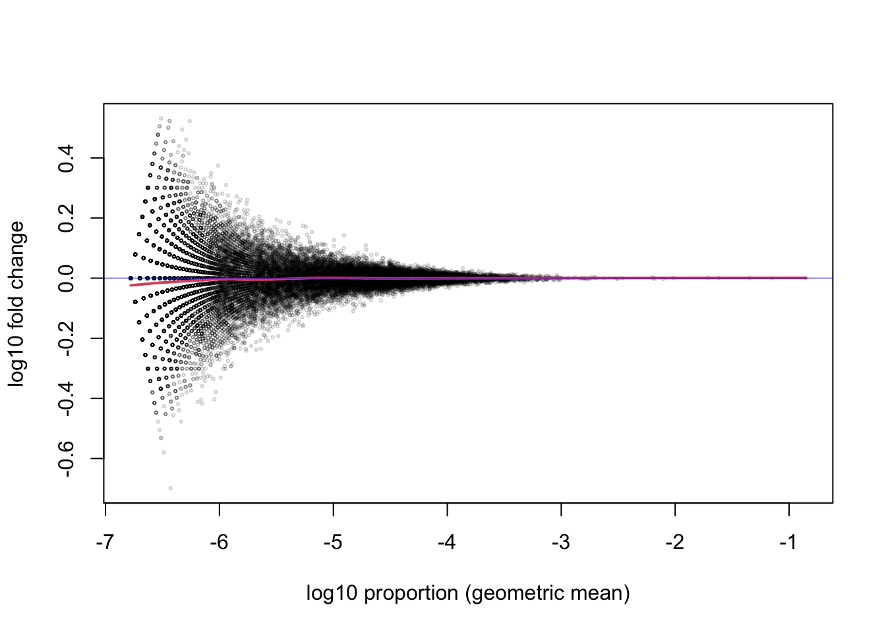
Note that, even after filtering out genes that do not have a count of 5 or more for both samples, there is still substantial variance for the ratio of proportions for the small count genes compared to the large count genes.
2.2 Modeling counts with DESeq2
I will now demonstrate the use of the DESeq2 package for estimating
per-sample scaling factors, per-gene dispersion and fold changes per
gene across the samples. As in edgeR and limma, DESeq2 allows
for the use of complex designs, leveraging R’s formula syntax. For
details about various design formula, first consult the DESeq2
vignette and ?results help page.
I create a DESeqDataSet object, by providing the gene-level
SummarizedExperiment object, and specifying the design, which is a
formula expressing how we wish to model the counts. Here, I specify a
baseline term for each line (OCT4 or BRG1), and a condition effect
specific to each line (so comparing treated vs untreated, specific to
each line). The colon between line and condition specifies to form
an interaction between those two terms.
## using counts and average transcript lengths from tximetaAfter creating the dataset, I perform some minimal filtering that makes sense for bulk RNA-seq. I filter such that there must be at least three samples with a count of 10 or more to keep the gene in the dataset. This will reduce the size of the dataset (here, removing more than half of the genes) and the time needed to fit various per-gene parameters, such as dispersion and fold change estimates.
## keep
## FALSE TRUE
## 30173 23524The parameters are estimated with a single call to the DESeq
function. For details on all the steps performed by this function,
check the help page ?DESeq, as well as a section of the vignette
called, ``The DESeq2 model’’. Briefly, DESeq2 computes a robust
size factor which outperforms the total count in adjusting for
differential sequence depth across libraries. Then DESeq2 computes
(iteratively) the coefficients of a generalized linear model (GLM),
and a dispersion parameter that reflects the variation in addition
to the Poisson variation, around the expected value for each sample
conditioned on information in the design matrix.
## estimating size factors## using 'avgTxLength' from assays(dds), correcting for library size## estimating dispersions## gene-wise dispersion estimates## mean-dispersion relationship## final dispersion estimates## fitting model and testingOne of the key estimates is the dispersion for each gene. DESeq2 uses a combination of methods to estimate the dispersion. First, the gene-wise estimate is produced using the methods proposed by edgeR in 2012 for a Negative Binomial generalized linear model (GLM) (16). Briefly, the maximum adjusted profile likelihood estimate is calculated, where the adjustment of (22) is used to avoid a downward bias on the dispersion estimate. This bias adjustment is similar in theory to the the use of \(\frac{1}{n-1}\) in estimating the sample variance.
Below I plot the estimates over the mean of scaled counts for each gene. Note that many of the plots in DESeq2 refer to “normalized counts”; here this just implies scaling the counts by the size factor, so that the differences affecting counts across samples are minimized.
There are two per-gene estimates, an initial estimate which looks only
at the data for a single gene (gene-est, black points), and a final
estimate that incorporates information from each gene, as well as
sharing information across genes (final, blue points). The blue
circles at the top of the plot represent genes with high dispersion
relative to the rest of the dataset, and in these cases, only the
gene-est estimate is used, without information from other genes.
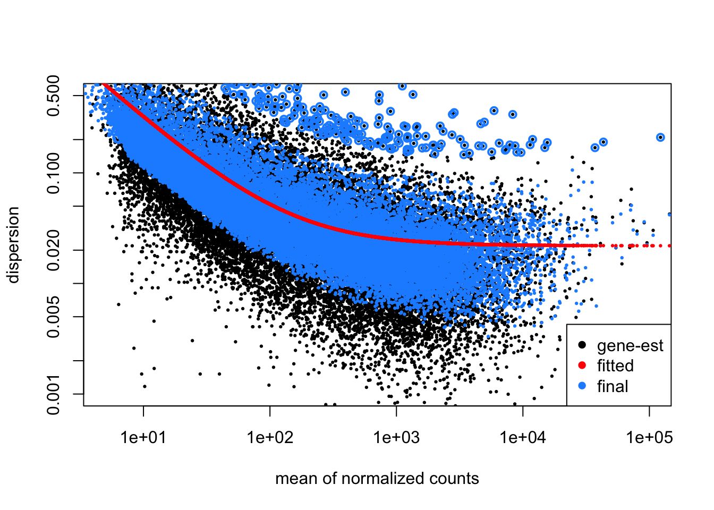
Below I will continue with per-gene analysis, but first, I demonstrate
how to examine differences across the most variable genes using a PCA
plot. Before I compute the principal components, I use the vst
function to compute a variance stabilizing transformation (VST)
(23) of the count data. This is similar to a log2
transform but avoids inflating the variance of the low count genes.
For more details on the methods used here to compute the
transformation, consult the DESeq2 vignette or ?vst. The specific
VST used by DESeq2 for RNA-seq counts was proposed by the first
DESeq paper by (24).
Another option for performing dimension reduction (as in PCA) on count data is to use the Poisson distance (25) or GLM-PCA (26). These two alternatives are explored in the gene-level RNA-seq workflow hosted on Bioconductor (1).
Below I specify blind=FALSE which will use the sample grouping
information when calculating the per-gene dispersion. The
transformation itself does not use the design, once the global
dispersion trend has been fit.
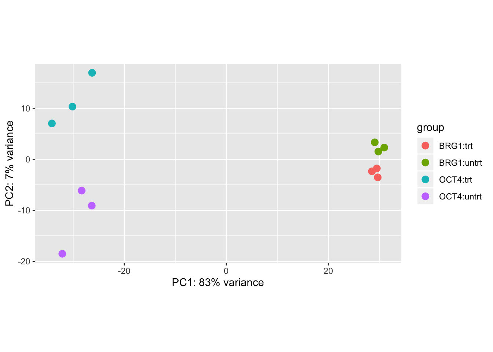
We can see that the primary axis of variation among the most variable genes is the cell line difference (OCT4 vs BRG1), and the second axis corresponds to treatment differences, though note that these are not consistent across cell line.
I can extract various results tables from the dds object, based
on the design. Here I extract a table of results for the effect of
condition in the OCT4 line. The summary function will provide a
summary table across all genes. We observe more than a thousand genes
up- and down-regulated with response to treatment for this comparison,
for a false discovery rate (FDR) cutoff of 10%.
## [1] "Intercept" "line_BRG1_vs_OCT4"
## [3] "lineOCT4.conditiontrt" "lineBRG1.conditiontrt"##
## out of 23524 with nonzero total read count
## adjusted p-value < 0.1
## LFC > 0 (up) : 1615, 6.9%
## LFC < 0 (down) : 1932, 8.2%
## outliers [1] : 3, 0.013%
## low counts [2] : 0, 0%
## (mean count < 3)
## [1] see 'cooksCutoff' argument of ?results
## [2] see 'independentFiltering' argument of ?resultsThe genes with an adjusted p-value, padj, less than a threshold,
say 0.1, provide a set that is expected to control its nominal FDR,
for example no more than 10% of the genes in such a set on average
should be false positives.
We can look at the top lines of the results table. Note that DESeq2 does not sort the table, this must be done by the user. The top three lines correspond to the first three genes in the dataset unless the user performs an ordering operation.
## log2 fold change (MLE): lineOCT4.conditiontrt
## Wald test p-value: lineOCT4.conditiontrt
## DataFrame with 3 rows and 6 columns
## baseMean log2FoldChange lfcSE
## <numeric> <numeric> <numeric>
## ENSMUSG00000000001.4 2182.07 -0.00287371 0.205255
## ENSMUSG00000000028.15 1210.76 0.05177269 0.129113
## ENSMUSG00000000031.16 4641.53 1.28151815 0.620842
## stat pvalue padj
## <numeric> <numeric> <numeric>
## ENSMUSG00000000001.4 -0.0140007 0.9888295 0.996691
## ENSMUSG00000000028.15 0.4009890 0.6884283 0.888527
## ENSMUSG00000000031.16 2.0641608 0.0390025 0.195436For example, I can order adjusted p-values from small to large (but
then remember that this object is no long aligned with rows of dds
for example).
I will show how to examine the differences across all genes in an
MA-plot. But first, I will compute a new estimate of fold change. The
estimate in the results table above is the MLE, or maximum likelihood
estimate, which is highly variable for low count genes (as we saw in
the simulated example). Here I compute a Bayesian estimate for the
fold change using methods in the apeglm package (27). The
apeglm functions are wrapped up in a DESeq2 function called
lfcShrink, which produces a table similar to results but with
shrunken LFC instead of MLE.
## using 'apeglm' for LFC shrinkage. If used in published research, please cite:
## Zhu, A., Ibrahim, J.G., Love, M.I. (2018) Heavy-tailed prior distributions for
## sequence count data: removing the noise and preserving large differences.
## Bioinformatics. https://doi.org/10.1093/bioinformatics/bty895Another option for shrinkage is to specify type="ashr" which will
make use of the ashr package for shrinkage of effect sizes,
with methods described by (28).
We can now examine the differences between the MLE and the Bayesian estimate of fold change from apeglm. First the MLE:
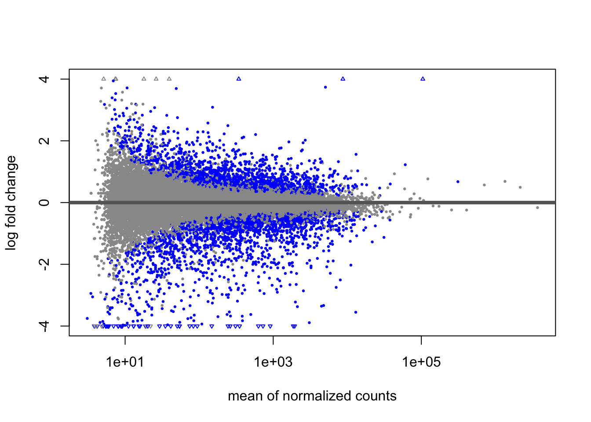
The genes passing a 10% FDR threshold are colored in blue. Note the wide variability on the left side of the plot. This is mostly due to imprecision in our estimates.
After applying the Bayesian shrinkage procedure, the variability due to imprecision on the left side of the plot is reduced. In the paper by (27), it is demonstrated that the shrunken LFC are better suited for ranking genes by effect size.
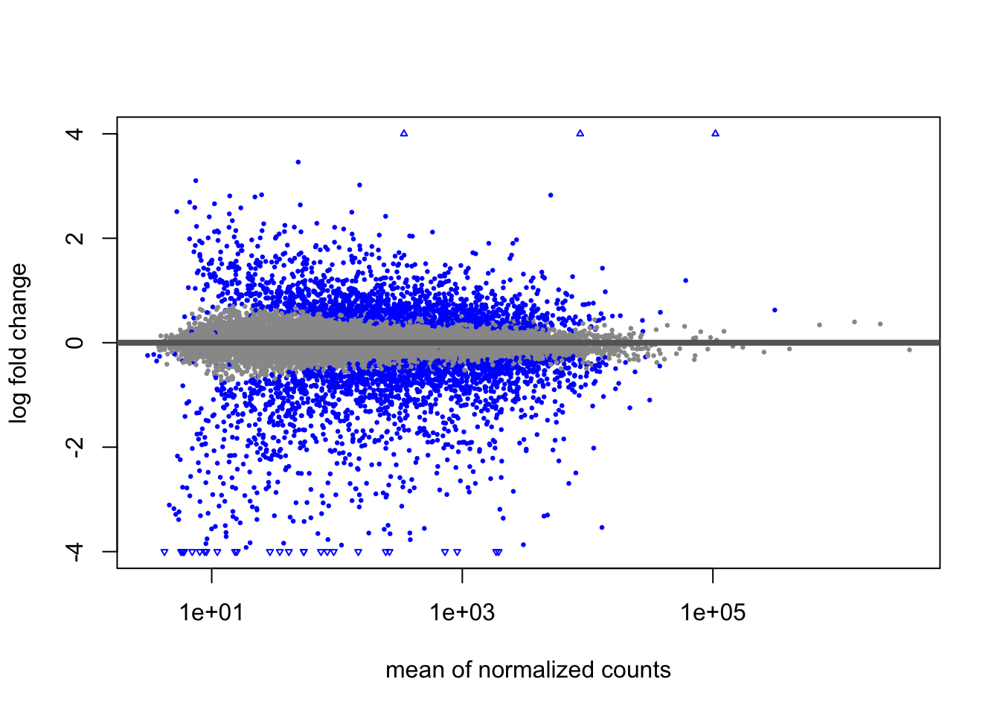
For ranking genes by effect size, one would rank by
abs(log2FoldChange) (with decreasing=TRUE), instead of by padj.
In the next series of code chunks, I demonstrate how to add additional
identifiers, such as gene symbols, to the MA-plot. I will select a
subset of genes to add labels, here filtering the results table to a
set of genes based on baseMean and log2FoldChange (these choices
are arbitrary, solely for demonstration). For a given experiment, it
would make more sense to pick out relevant genes by both significance,
effect size, and biological interpretation. Because I have not
re-ordered the lfc results table, I can add the SYMBOL column from
the dds object to the results table, and then create a smaller table
with our genes of interest.
lfc$SYMBOL <- mcols(dds)$SYMBOL
tab <- lfc %>% as.data.frame %>%
filter(between(baseMean, 1e4, 1e5),
between(abs(log2FoldChange), 1, 4))
tab <- tab[complete.cases(tab),]I now highlight the genes in tab using the points and text
functions.
plotMA(lfc, ylim=c(-4,4),
colNonSig="grey60", colSig="blue", colLine="grey40")
with(tab, {
points(baseMean, log2FoldChange, cex=2, col="blue")
text(baseMean, log2FoldChange, SYMBOL, pos=4, col="blue")
})
That worked, although it’s not easy to see the labels for a set of
overlapping points below the horizontal axis. I can make a nicer
looking plot using ggplot2. First I create a data frame that I
will pass to the ggplot function.
dat <- as.data.frame(lfc)
dat <- dat[complete.cases(dat),]
dat <- dat %>% mutate(sig = ifelse(padj < .1, "Y", "N"))
tab$sig <- "Y"The following ggplot code chunk recreates the MA-plot that is
built into DESeq2, but also uses the ggrepel package to make sure
the point labels for our genes of interest do not overlap:
library(ggplot2)
library(ggrepel)
ggplot(dat, aes(baseMean, log2FoldChange, col=sig, label=SYMBOL)) +
geom_point() + scale_x_log10() +
xlab("mean of normalized counts") +
ylab("log fold change") +
geom_hline(yintercept=0, col="grey40") +
scale_color_manual(values=c("grey60", "blue")) +
geom_point(data=tab, shape=1, size=5, show.legend=FALSE) +
geom_label_repel(data=tab,
nudge_x = 1,
nudge_y = 2*sign(tab$log2FoldChange),
show.legend=FALSE)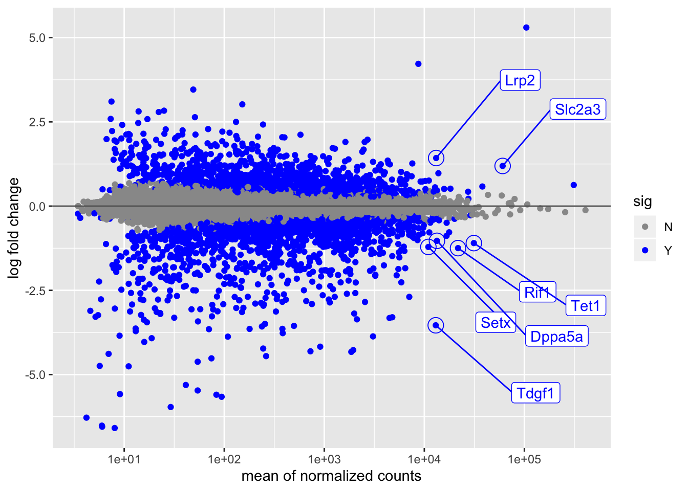
2.3 Hypothesis weighting
In the last series of code chunks, I will demonstrate the use of
Independent Hypothesis Weighting (IHW) (19), in lieu of
the more simplistic mean count filtering that is used in results
by default. Instead of finding a threshold on the mean of scaled
counts that optimizes the number of rejected hypotheses following
Benjamini-Hochberg correction (29), the IHW package
finds an optimal weighting of the hypotheses that maximizes power
while still controlling the FDR.
To use IHW instead of mean count thresholding, I pass the ihw
function to the filterFun argument of results. A similar number
of genes are detected as differentially expressed in this case.
##
## out of 23524 with nonzero total read count
## adjusted p-value < 0.1
## LFC > 0 (up) : 1630, 6.9%
## LFC < 0 (down) : 1974, 8.4%
## outliers [1] : 3, 0.013%
## [1] see 'cooksCutoff' argument of ?results
## see metadata(res)$ihwResult on hypothesis weightingWe can observe the weighting of hypotheses for various mean count ranges, across the cross-validation folds. For more details on the methods used here, consult the IHW package vignette and the publication by (19).
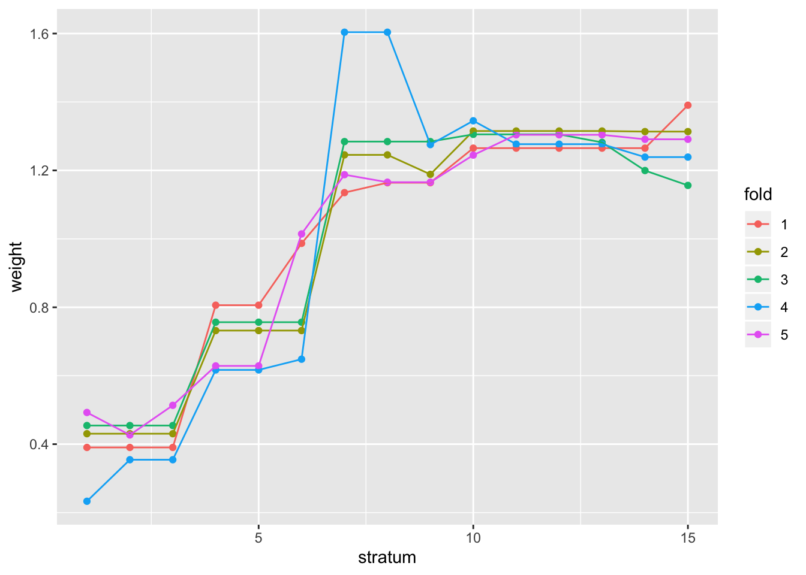
Again, we can show that a similar set of genes were found in this case
although in general the IHW procedure can outperform the simple
filtering rules that results uses by default.
## IHW
## filter FALSE TRUE
## FALSE 20616 145
## TRUE 95 2665References
1. Love M, Anders S, Kim V, Huber W. 2015. RNA-seq workflow: Gene-level exploratory analysis and differential expression. F1000Research. 4(1070):
6. Patro R, Duggal G, Love M, Irizarry R, Kingsford C. 2017. Salmon provides fast and bias-aware quantification of transcript expression. Nature Methods. 14:417–19
14. Love MI, Huber W, Anders S. 2014. Moderated estimation of fold change and dispersion for RNA-seq data with DESeq2. Genome Biology. 15(12):550
15. Robinson MD, McCarthy DJ, Smyth GK. 2010. edgeR: a Bioconductor package for differential expression analysis of digital gene expression data. Bioinformatics. 26(1):139
16. McCarthy DJ, Chen Y, Smyth GK. 2012. Differential expression analysis of multifactor RNA-Seq experiments with respect to biological variation. Nucleic Acids Research. 40:4288–97
17. Law CW, Chen Y, Shi W, Smyth GK. 2014. voom: precision weights unlock linear model analysis tools for RNA-seq read counts. Genome Biology. 15(2):29
18. Wu H, Wang C, Wu Z. 2012. A new shrinkage estimator for dispersion improves differential expression detection in RNA-seq data. Biostatistics
19. Ignatiadis N, Klaus B, Zaugg J, Huber W. 2016. Data-driven hypothesis weighting increases detection power in genome-scale multiple testing. Nature Methods
20. Dudoit S, Yang YH, Callow MJ, Speed TP. 2002. Statistical methods for identifying differentially expressed genes in replicated cDNA microarray experiments. Statistica Sinica. 12(1):111–39
21. Roberts CJ, Nelson B, Marton MJ, Stoughton R, Meyer MR, et al. 2000. Signaling and circuitry of multiple mapk pathways revealed by a matrix of global gene expression profiles. Science. 287(5454):873–80
22. Cox DR, Reid N. 1987. Parameter orthogonality and approximate conditional inference. Journal of the Royal Statistical Society, Series B. 49(1):1–39
23. Tibshirani R. 1988. Estimating transformations for regression via additivity and variance stabilization. Journal of the American Statistical Association. 83:394–405
24. Anders S, Huber W. 2010. Differential expression analysis for sequence count data. Genome Biology. 11:R106
25. Witten DM. 2011. Classification and clustering of sequencing data using a Poisson model. The Annals of Applied Statistics. 5(4):2493–2518
26. Townes FW, Hicks SC, Aryee MJ, Irizarry RA. 2019. Feature Selection and Dimension Reduction for Single Cell RNA-Seq based on a Multinomial Model. bioRxiv
27. Zhu A, Ibrahim JG, Love MI. 2018. Heavy-tailed prior distributions for sequence count data: Removing the noise and preserving large differences. Bioinformatics
28. Stephens M. 2016. False discovery rates: A new deal. Biostatistics. 18(2):
29. Benjamini Y, Hochberg Y. 1995. Controlling the false discovery rate: A practical and powerful approach to multiple testing. Journal of the Royal Statistical Society B. 57:289–300